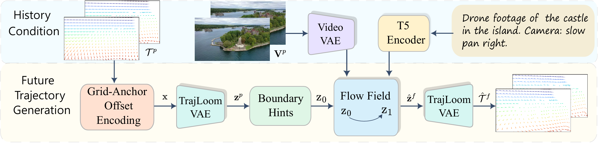
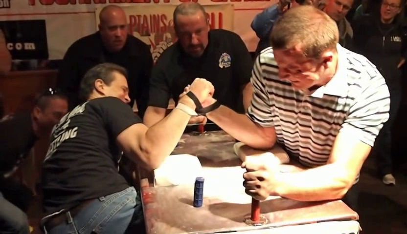

Pipeline Overview

Overview of TrajLoom.
Given observed trajectories \( \mathcal{T}^{p} \), we rasterize and encode
them with
Grid-Anchor Offset Encoding into a dense offset field, then compress
with TrajLoom-VAE into
history latents \( \mathbf{z}^{p} \). Conditioned on
\( \mathbf{z}^{p} \) and video features, TrajLoom-Flow generates future latents
via rectified-flow integration with boundary hints, which are decoded by
TrajLoom-VAE into future trajectories \( \hat{\mathcal{T}}^{f} \).
1. Grid-Anchor Offset Encoding
Grid-Anchor Offset Encoding reduces location-dependent bias by representing each observed point as an offset from its pixel-center anchor, producing a dense motion field that is easier to model than absolute coordinates.
2. TrajLoom-VAE
TrajLoom-VAE learns a compact spatiotemporal latent space for dense trajectories with masked reconstruction and a spatiotemporal consistency regularizer.
3. TrajLoom-Flow
TrajLoom-Flow predicts the full future trajectory window in the latent space from history latents, visibility, and video features, using boundary cues and on-policy K-step fine-tuning for stable long-horizon sampling.
Abstract
Predicting future motion is crucial in video understanding and controllable video generation. Dense point trajectories are a compact, expressive motion representation, but modeling their future evolution from observed video remains challenging. We propose a framework that predicts future trajectories and visibility from past trajectories and video context. Our method has three components: (1) Grid-Anchor Offset Encoding, which reduces location-dependent bias by representing each point as an offset from its pixel-center anchor; (2) TrajLoom-VAE, which learns a compact spatiotemporal latent space for dense trajectories with masked reconstruction and a spatiotemporal consistency regularizer; and (3) TrajLoom-Flow, which generates future trajectories in latent space via flow matching, with boundary cues and on-policy K-step fine-tuning for stable sampling. We also introduce TrajLoomBench, a unified benchmark spanning real and synthetic videos with a standardized setup aligned with video-generation benchmarks. Compared with state-of-the-art methods, our approach extends the prediction horizon from 24 to 81 frames while improving motion realism and stability across datasets. The predicted trajectories directly support downstream video generation and editing.
Qualitative Results
Qualitative Comparison

Downstream Tasks
Quantitative Results
Comparison of trajectory generation with WHN (L). FVMD and flow diagnostics (FlowTV × 102, DivCurlE × 103; ↓) on Kinetics, RoboTAP, Kubric (MOVi-A; same config as WHN), and MagicData (E).
| Metric | Method | Kinetics | RoboTAP | Kubric | MagicData (E) |
|---|---|---|---|---|---|
| FVMD ↓ | WHN (L) | 8999 | 7587 | 4872 | 10383 |
| Ours | 3626 | 2467 | 1338 | 2968 | |
| FlowTV (×102) ↓ | WHN (L) | 24.71 | 27.26 | 12.56 | 26.74 |
| Ours | 7.53 | 6.03 | 6.03 | 7.11 | |
| DivCurlE (×103) ↓ | WHN (L) | 34.69 | 37.39 | 9.89 | 40.04 |
| Ours | 3.97 | 2.03 | 2.09 | 2.99 |
Future-trajectory generation. The table above compares our generator and WHN (L) on real data (Kinetics, RoboTAP), synthetic data (Kubric), and MagicData (E). Kubric uses the same MOVi-A setup as WHN (L), and we re-render the dataset for direct comparison. Our method consistently improves motion quality, reducing FVMD by 2.5-3.6x, for example from 4872 to 1338 on Kubric. It also lowers FlowTV and DivCurlE, indicating fewer spatial discontinuities and more stable motion.
BibTeX
@misc{zhang2026trajloomdensefuturetrajectory,
title={TrajLoom: Dense Future Trajectory Generation from Video},
author={Zewei Zhang and Jia Jun Cheng Xian and Kaiwen Liu and Ming Liang and Hang Chu and Jun Chen and Renjie Liao},
year={2026},
eprint={2603.22606},
archivePrefix={arXiv},
primaryClass={cs.CV},
url={https://arxiv.org/abs/2603.22606},
}